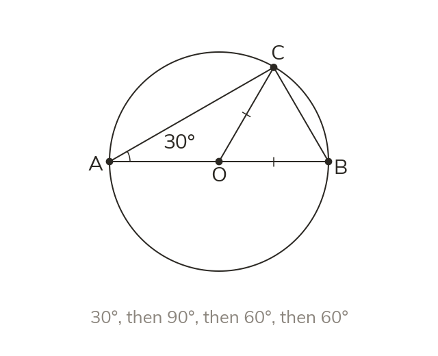

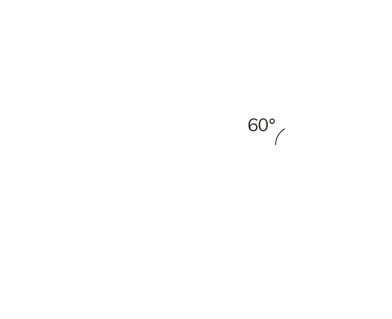
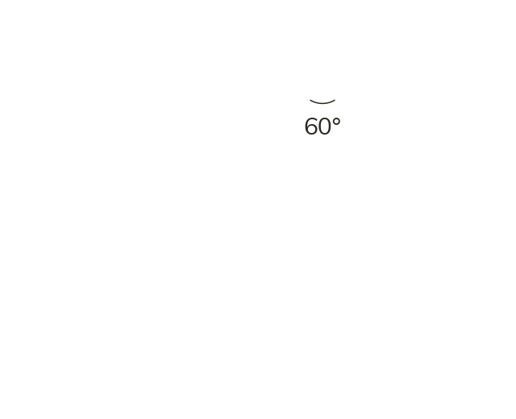
One fact feeds the next
Each theorem finds one new angle. That angle unlocks the next step.
Exam circle questions are rarely one step. Chaining theorems, with a reason at each step, is what earns the marks.
Work down the page at your own pace. Write every answer in your book first, then click to check it.
Read each card, then follow the worked examples one step at a time.



Each theorem finds one new angle. That angle unlocks the next step.
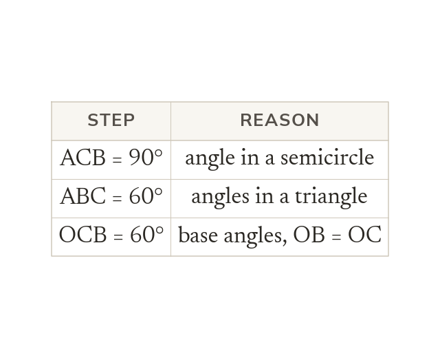
Each step names the fact it uses. A sum on its own is not a reason.
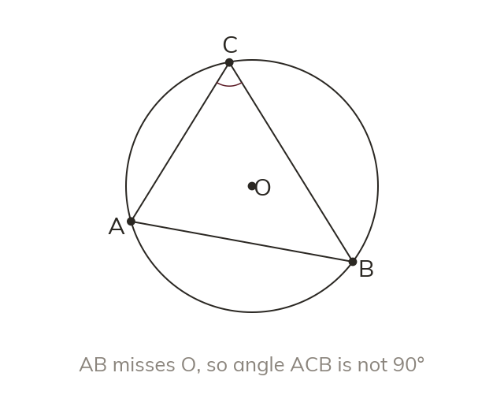
A theorem needs its condition shown in the diagram. A chord that looks central is not a diameter.
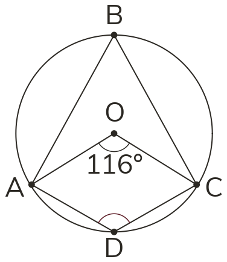
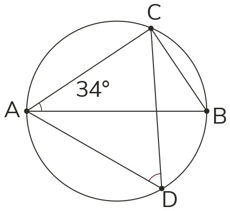
Pick an answer. If it's wrong, the feedback tells you which mistake it was.
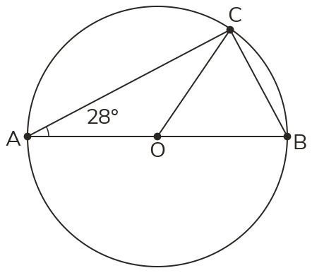
Read each card, then follow the worked examples one step at a time.
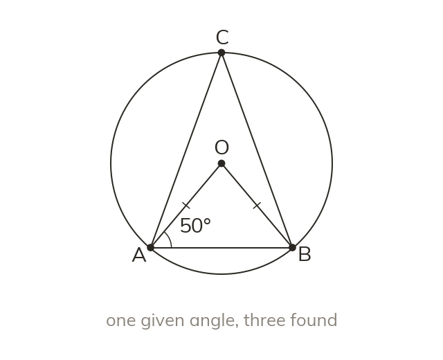
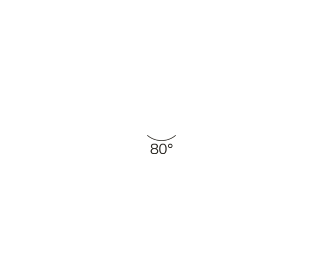
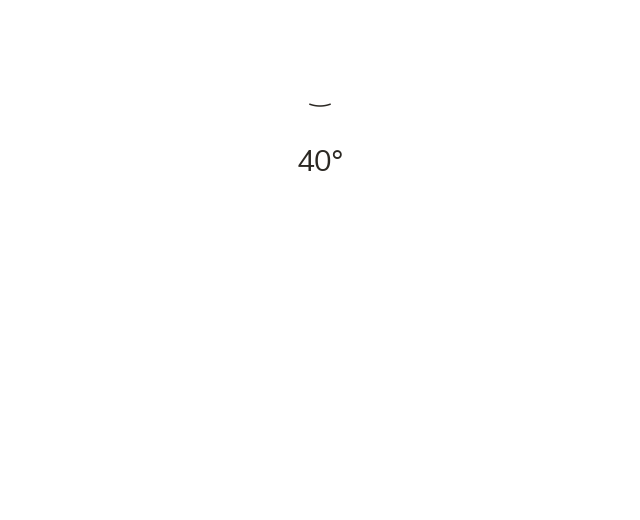
A goal-free diagram asks for every angle that can be found. The route to any target appears along the way.
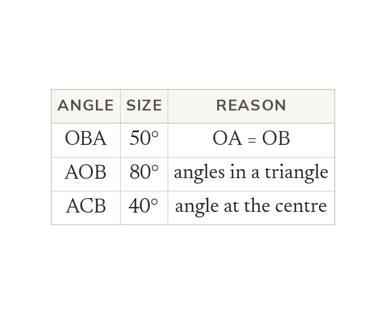
Each found angle is written on the diagram. Its reason goes in the working beside it.
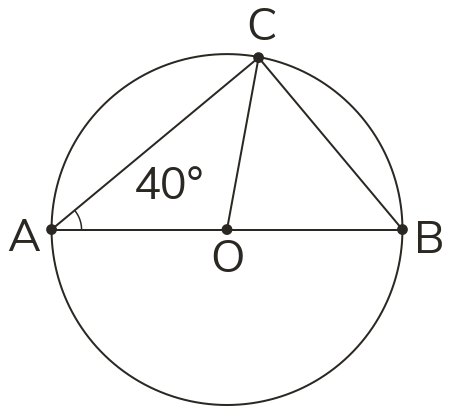
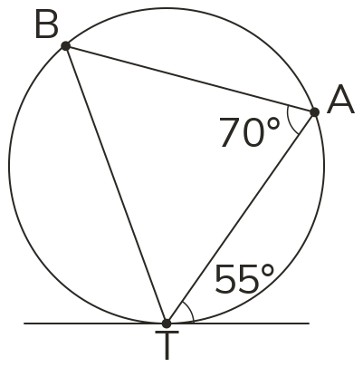
Pick an answer. If it's wrong, the feedback tells you which mistake it was.
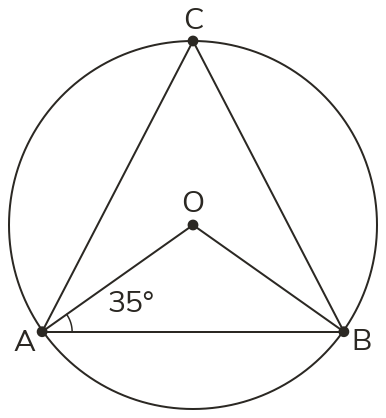
Finished? Next lesson: 10H.14.5 Intersecting Chords Inside and Outside a Circle.
Log in, then search for a code to practise that skill.
Videos, worksheets and more on each part of this lesson.